DPMS
Ekosistem e-Pentaksiran Berterusan untuk Projek Rekabentuk
Pengumpulan pelajar automatik, logbook & carta Gantt mingguan, penilaian rakan sebaya dan e-rubrik pelbagai penilai dalam satu aliran digital, dibina di atas Google Workspace UniMAP tanpa kos lesen.

Ts. Dr. Ahmad Ashraf bin Abdul Halim
Ts. Dr. 'Aini Syuhada binti Md Zain
Puan Nurol Husna binti Che Rose Fakulti Kejuruteraan & Teknologi Elektronik, Universiti Malaysia Perlis
Peta e-book ini
Empat penyelaras, tiga program, satu sistem

- Ts. Dr. Mohd. Zamri bin Zahir AhmadKetua · Penyelaras UR6523007 Sistem Elektronik · pembangun sistem
- Ts. Dr. Ahmad Ashraf bin Abdul HalimPenyelaras UR6523008 Reka Bentuk Telekomunikasi Elektronik
- Ts. Dr. 'Aini Syuhada binti Md ZainPenyelaras UR6523009 Reka Bentuk Rangkaian Elektronik
- Puan Nurol Husna binti Che RosePenyelaras UR6523009 Reka Bentuk Rangkaian Elektronik
Penyelaras di lapangan


Maklumat institusi & ahli kumpulan
A. Maklumat institusi
- Nama institusi
- Universiti Malaysia Perlis (UniMAP)
- Alamat institusi
- Fakulti Kejuruteraan & Teknologi Elektronik (FKTEN), Kampus Pauh Putra, 02600 Arau, Perlis
- Ketua kumpulan
- Ts. Dr. Mohd. Zamri bin Zahir Ahmad
- No. Kad Pengenalan
- dalam versi PDF
- Alamat pejabat
- FKTEN, Kampus Pauh Putra, 02600 Arau, Perlis
- No. telefon pejabat
- 04-988 5509 / 5515 (FKTEN)
- No. telefon bimbit
- dalam versi PDF
- E-mel rasmi
- zamrizahir@unimap.edu.my
B. Ahli kumpulan
| Nama | Peranan | E-mel |
|---|---|---|
| Ts. Dr. Ahmad Ashraf bin Abdul Halim | Penyelaras UR6523008 | ashrafhalim@unimap.edu.my |
| Ts. Dr. 'Aini Syuhada binti Md Zain | Penyelaras UR6523009 | ainisyuhada@unimap.edu.my |
| Puan Nurol Husna binti Che Rose | Penyelaras UR6523009 | husnarose@unimap.edu.my |
Profil kursus
Sinopsis kaedah pentaksiran alternatif
Kursus Projek Rekabentuk dinilai 100% secara berterusan. Sebelum inovasi ini, buktinya bertaburan dalam fail Word, borang kertas dan kalkulator. DPMS menukar pentaksiran kursus kepada aliran digital yang berterusan, berasaskan bukti dan dinilai oleh pelbagai penilai, dari hari kumpulan dibentuk hingga markah CO-PO terakhir.
Isu yang mencetuskan pentaksiran alternatif
Kursus berbilang program, 180+ pelajar dan 100% penilaian berterusan tidak boleh lagi diurus dengan kertas.
Objektif pelaksanaan
- Menjadikan pentaksiran benar-benar berterusan. Setiap kumpulan menghantar logbook dan kemajuan Gantt setiap minggu, dan penyelia mengesahkannya dengan komen sebelum penilaian akhir.
- Menjamin keadilan sejak awal. Kumpulan seimbang dari segi akademik dan demografi, serta penyelia dan panel tanpa pertindihan program.
- Menilai sumbangan individu dalam kerja berpasukan. Penilaian rakan sebaya 7 kriteria dalam talian untuk CO4 (PO8).
- Meningkatkan kesahan dan kebolehpercayaan markah. e-Rubrik yang sama untuk semua penilai, tiga penilai bagi setiap kumpulan, semakan percanggahan automatik dan pengiraan CO-PO tanpa kesilapan manusia.

Satu portal, tiga alat, satu aliran pentaksiran
Pelajar, penyelia, panel dan penyelaras masuk melalui portal kursus yang sama.


Setiap komponen dipetakan kepada CO dan PO
| Komponen pentaksiran | CO | PO | % | Alat dalam sistem |
|---|---|---|---|---|
| Laporan (SV, Panel 1, Panel 2) | CO1–CO3, CO6 | PO3, PO6, PO7, PO10 | 40% | e-Rubrik 20 kriteria |
| Pembentangan (Panel 1, Panel 2) | CO1–CO3, CO5, CO7 | PO3, PO6, PO7, PO9, PO12 | 25% | e-Rubrik, daftar masuk di dewan |
| Pemerhatian penyelia | CO4, CO6 | PO8, PO10 | 20% | e-Rubrik individu & kumpulan |
| Logbook mingguan (penyelaras) | CO6 | PO10 | 10% | Rubrik A1–A5, 14 minggu, disahkan SV |
| Penilaian rakan sebaya | CO4 | PO8 | 5% | 7 kriteria, dalam talian |

Kenapa ini pentaksiran alternatif
Pentaksiran tidak lagi bergantung pada satu produk akhir. Proses (logbook, Gantt), sumbangan individu (rakan sebaya) dan hasil akhir (laporan, pembentangan) dinilai bersama, masing-masing dipetakan kepada hasil pembelajaran MQF.
Kaedah ini menggabungkan pentaksiran formatif mingguan dan pentaksiran sumatif akhir dalam satu rekod yang sama.
Sumber: Pelan Pengajaran & Pembelajaran NMK31704 Sem 2 2025/2026.
Setiap kriteria dinilai 0–5 dengan deskriptor bertulis; markah ditukar kepada pemberat secara automatik, jadi tiada pengiraan manual oleh penilai.
Kumpulan seimbang dalam minit, bukan hari
Dahulu penyelaras berjaya mengimbangi kumpulan secara manual, tetapi ia mengambil masa berhari-hari dan mudah tersilap. Kini peraturan yang sama dijalankan oleh algoritma.

Adil untuk pensyarah juga


Beban tugas seimbang
76 pensyarah menjadi penyelia, penyelia bersama, Panel 1 atau Panel 2. Tiada sesiapa memegang lebih daripada 3 peranan, dan 30 kumpulan dinilai oleh pasangan panel teras program manakala 13 oleh pasangan campuran.
Sumber: projek tersimpan alat pengumpulan, Jun 2026.
Logbook digital: satu borang, setiap minggu


Kehadiran setiap ahli ditanda.
Kemajuan Gantt ditanda terus.
Agenda, kemajuan, isu dalam format standard.
Gambar bukti wajib (1,200 gambar).
Dihantar kepada penyelia untuk disahkan.
| Rubrik logbook (penyelaras) | Pemberat | Markah 5 bermaksud |
|---|---|---|
| A1 Format / organisasi | 12.5% | Semua ruangan wajib diisi lengkap setiap minggu |
| A2 Laporan aktiviti | 25% | Sentiasa dikemas kini, aktiviti relevan tanpa pengulangan |
| A3 Bukti aktiviti | 25% | Bukti lengkap, relevan dan berlabel (gambar, rajah, jadual) |
| A4 Pelan kerja | 25% | Kerja mengikut carta Gantt yang dirancang |
| A5 Pengesahan penyelia | 12.5% | Disahkan oleh penyelia bagi setiap minggu |
Carta Gantt yang hidup, bukan lukisan statik


Bukti CO6 setiap minggu
596 tugasan dirancang oleh 43 kumpulan (purata 13.9). Setiap logbook memautkan kerja minggu itu kepada tugasan Gantt, jadi penyelia dan penyelaras melihat perancangan lawan pelaksanaan sebenar.
Ini menyokong CO6 "menilai aplikasi prinsip pengurusan projek" dengan bukti proses, bukan hanya bab laporan.
Setiap minggu ada bukti, setiap bukti disahkan

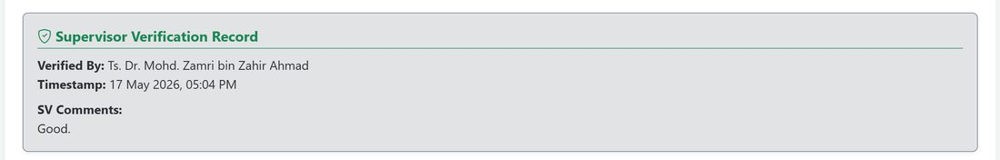
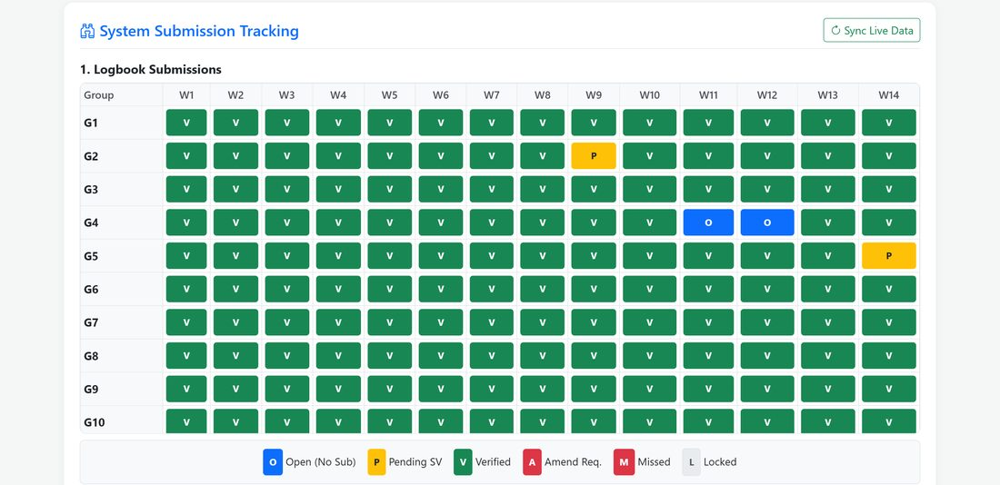
Tiga penilai, satu rubrik, di tempat

- Peranan dikekalkan: Supervisor, Co-supervisor, Panel 1, Panel 2, Coordinator.
- Daftar masuk mengesahkan panel hadir sebelum menilai.
- Borang dikunci selepas tempoh penilaian (13:00, 2 Julai 2026).
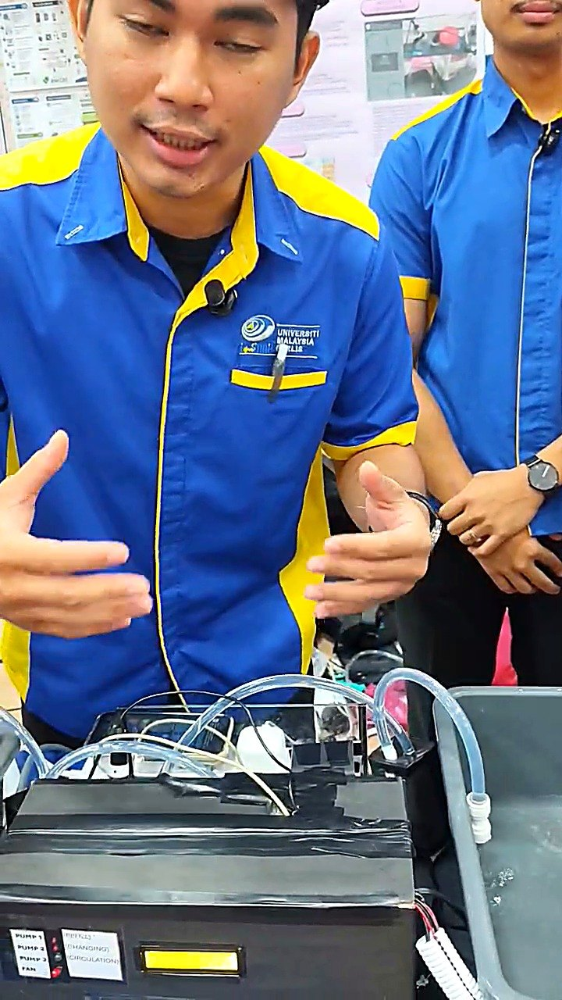
Perbezaan penilai kini kelihatan

Apa yang data tunjukkan
Purata Panel 1 dan Panel 2 hampir sama: laporan 7.89 lawan 8.03, pembentangan 7.80 lawan 7.92 (daripada 10). Beza purata kurang 1 markah.
Markah berkumpul dalam julat sempit, jadi korelasi antara penilai rendah. Kerana itu sistem menanda setiap percanggahan untuk semakan penyelaras, sesuatu yang tidak mungkin dengan borang kertas.
Ketepatan data: markah yang dikira automatik oleh eScoring dapat dihasilkan semula tepat untuk 182/182 pelajar apabila disemak semula dengan rekod CO-PO rasmi.
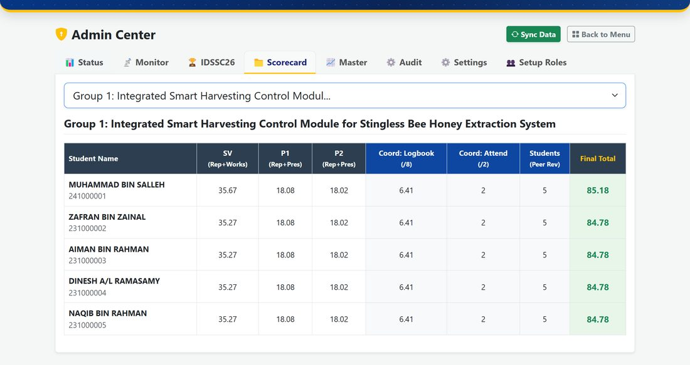
Apa yang Sistem Pengurusan Pembelajaran biasa tidak lakukan
Sistem Pengurusan Pembelajaran (Learning Management System, LMS) seperti portal e-pembelajaran universiti menyimpan bahan dan tugasan, tetapi tidak mengendalikan kekangan kursus projek berbilang program ini.
| Aspek | Amalan sebelum / LMS | Inovasi DPMS |
|---|---|---|
| Pembentukan kumpulan | Manual, 2–3 hari bekerja, mudah tersilap | Algoritma S-shape + Greedy Swap, beberapa minit |
| Agihan penyelia & panel | Manual, perlu semakan berulang | Gelung penyelesaian konflik, tiada pertindihan program |
| Logbook | Word → PDF, 4 kali satu semester | 14 entri dalam talian, disahkan SV dengan komen |
| Carta Gantt | Statik dalam laporan | Dikemas kini oleh logbook: on track / awal / lewat / terlepas |
| Sumbangan individu | ≈600 respons Google Form disusun manual | Penilaian rakan sebaya 7 kriteria + kehadiran |
| Penilaian akhir | Rubrik kertas, kalkulator | e-Rubrik, daftar masuk, borang dikunci |
| Kebolehpercayaan | Perbezaan penilai tidak kelihatan | Percanggahan > 15% ditanda automatik |
| CO-PO | Disediakan semula secara manual | Matriks CO-PO setiap pelajar dijana automatik |
| Kos | Lesen perisian komersial jika dibeli | RM0, di atas Google Workspace UniMAP |

Pelajar terlibat setiap minggu, bukan hanya di hujung semester
Sekurang-kurangnya 40 daripada 43 kumpulan menghantar logbook setiap minggu sepanjang 14 minggu; 10 daripada 14 minggu mencatat 43/43.

Maklum balas sebelum pelajar dinilai
Median 2.1 hari. 80% disahkan dalam 7 hari. Dahulu maklum balas hanya pada 4 titik semakan.


Rakan sebaya yang membezakan
Kebanyakan pelajar memberi markah penuh kepada rakan (501 daripada 596 penilaian). Namun 95 penilaian membezakan sumbangan, termasuk 18 penilaian di bawah 3/5 yang menandakan ahli kurang menyumbang.
Penyelia boleh menyemak kes ini sebelum markah CO4 dimuktamadkan.
Hari pembentangan: pelajar di hadapan panel


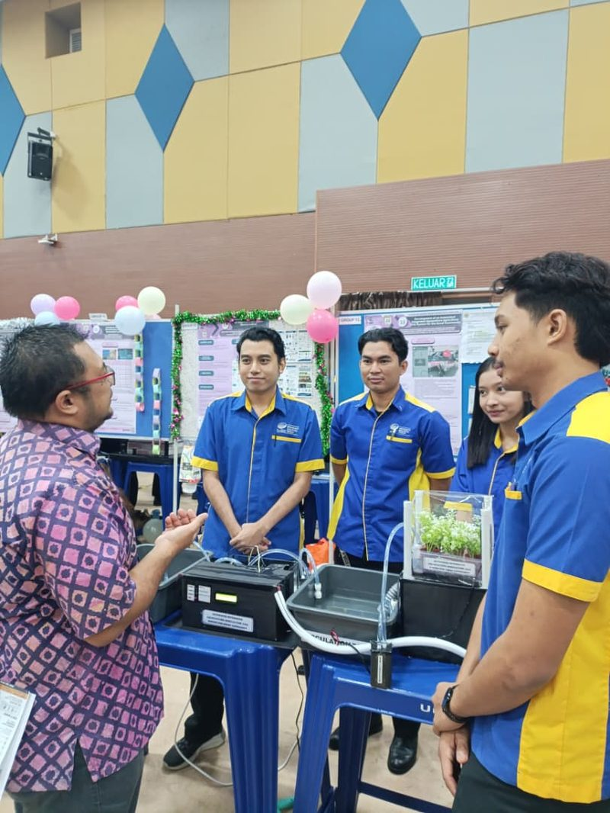
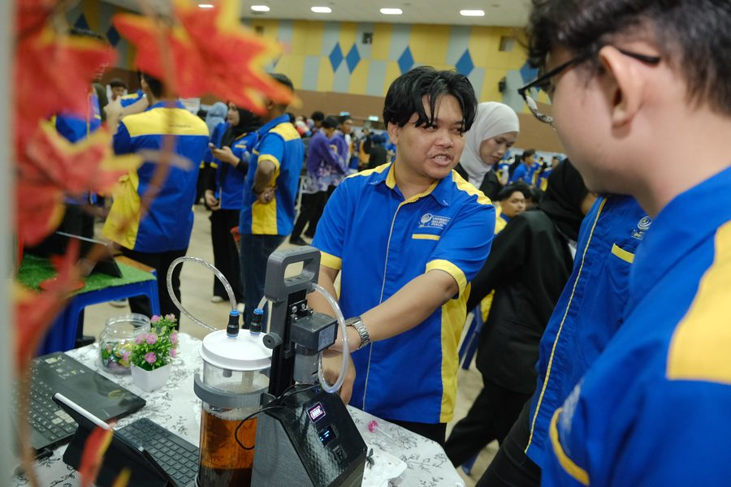
Pencapaian hasil pembelajaran meningkat
| 2025/2026 · % pelajar mencapai | CO1 | CO2 | CO3 | CO4 | CO5 | CO6 | CO7 |
|---|---|---|---|---|---|---|---|
| ≥ 50% markah CO | 100 | 100 | 100 | 100 | 99.5 | 100 | 97.8 |
| ≥ 65% markah CO | 100 | 97.8 | 100 | 98.9 | 90.1 | 100 | 85.7 |
| ≥ 80% markah CO | 56.6 | 75.8 | 68.1 | 92.3 | 60.4 | 97.8 | 46.2 |
Sumber: CER NMK31704 Semester 2 2024/2025 dan 2025/2026. Kedua-dua sesi: 182 pelajar, 3 program dan pecahan penilaian yang sama. CO7 (PO12) diperkenalkan pada 2025/2026.
Kenaikan terbesar tepat di bahagian yang diubah
Tafsiran
Komponen yang diubah oleh kaedah pentaksiran baharu (logbook mingguan, Gantt, pemantauan penyelia dan rakan sebaya) naik +6.2 hingga +10.6 mata. Komponen yang hanya dipindahkan ke e-rubrik naik +2.6 hingga +5.7.
Ini dua kohort berbeza, jadi kami tidak mendakwa sistem satu-satunya punca. Namun corak kenaikan yang lebih besar pada CO6 dan CO4 selari dengan perubahan pentaksiran yang dilaksanakan.
| Komponen | CO | 2024/2025 | 2025/2026 | Beza |
|---|---|---|---|---|
| Pengurusan projek (SV) | CO6 | 83.90% | 94.50% | +10.6 |
| Logbook + kehadiran | CO6 | 81.92% | 91.50% | +9.6 |
| Laporan pengurusan projek | CO6 | 81.41% | 88.00% | +6.6 |
| Pemerhatian SV | CO4 | 83.25% | 89.60% | +6.3 |
| Penilaian rakan sebaya | CO4 | 89.35% | 95.60% | +6.2 |
| Pembentangan CO2 | CO2 | 76.99% | 82.67% | +5.7 |
| Laporan CO1 | CO1 | 77.08% | 82.00% | +4.9 |
| Laporan CO2 | CO2 | 80.80% | 85.30% | +4.5 |
| Pembentangan CO1 | CO1 | 74.98% | 77.62% | +2.6 |
Masa penyelaras dipulangkan kepada pengajaran
Bilangan daripada Semester 2 2025/2026. Anggaran masa adalah anggaran penyelaras, bukan ukuran rasmi.
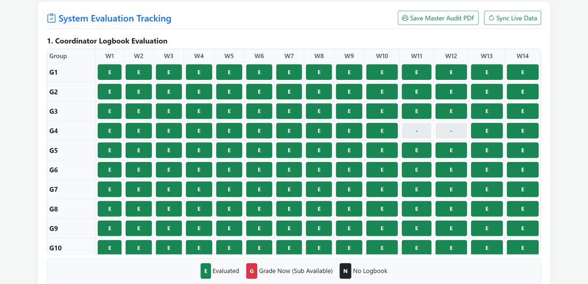
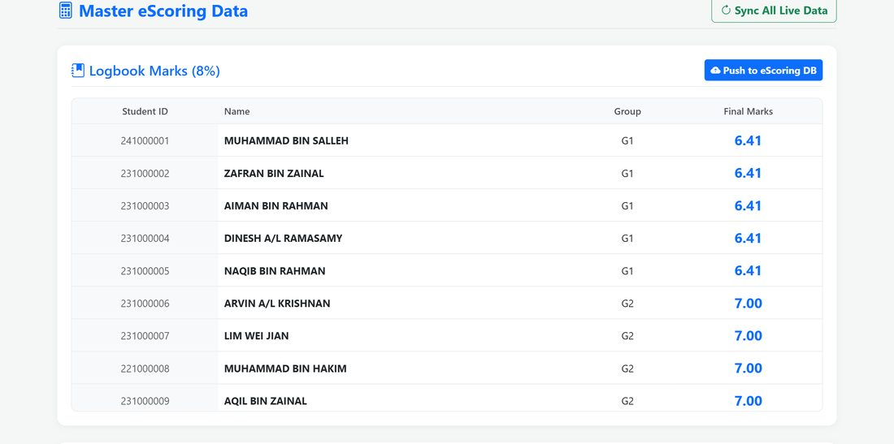
Masa yang dijimatkan, digunakan untuk pembelajaran bermakna
Dengan beban pentadbiran berkurang, penyelaras dapat memberi tumpuan kepada aktiviti pembelajaran lain dalam kursus yang sama. Semester ini kursus NMK31704 melaksanakan SULAM antarabangsa hibrid yang pertama bagi UniMAP, bersama Sekolah Tham Islam Suksa, Yala, Thailand (14 Jun 2026).

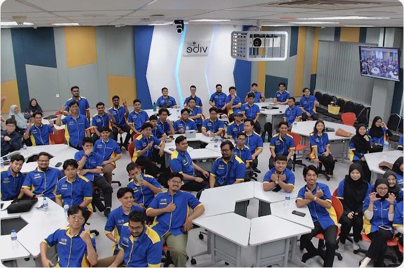
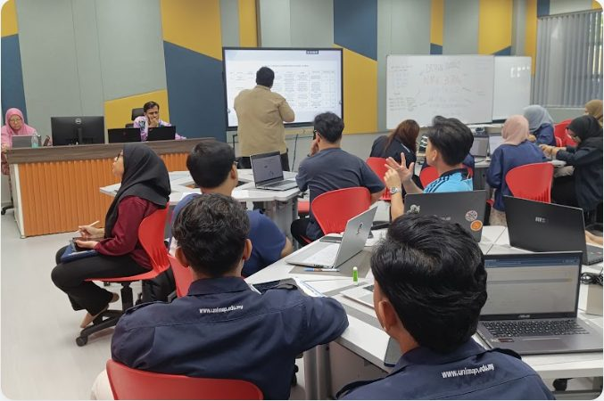
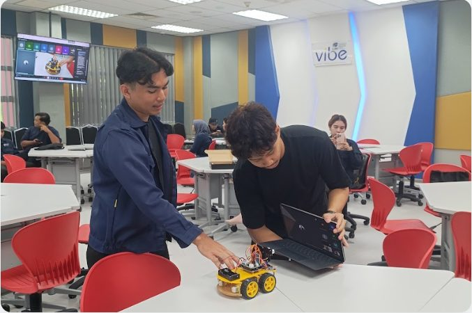
Produktiviti pasukan meningkat
Pada semester yang sama, pasukan penyelaras melaksanakan 4 siri DP Talk, SULAM antarabangsa hibrid dan pameran IDSSC 2026, dan inovasi SULAM hibrid itu turut memenangi Pingat Perak EDIC 2026.
Manfaat kepada pihak berkepentingan
Survei pengguna selepas pelaksanaan (41 responden: pelajar dan pensyarah), Mei 2026.
“Easy for students to update progress and supervisors can monitor project progress.”Pelajar
“Approved student's minute meeting and trace the student progress.”Pensyarah
“Hopefully this system will keep going to run for future use to other people.”Pensyarah
Penambahbaikan berterusan daripada maklum balas
| Maklum balas pengguna | Tindakan (versi 2027) |
|---|---|
| Sukar digunakan pada telefon | Reka bentuk mudah alih sepenuhnya, butang & teks lebih besar |
| Kadang-kadang gagal log masuk | Log masuk lebih stabil dengan akaun UniMAP |
| Draf logbook hilang | Simpan draf automatik |
| Ingin semakan tajuk projek lebih awal | Modul pengajuan & semakan tajuk |

Pengiktirafan


Diterbitkan & dibentangkan
Kertas inovasi "Transforming Course Administration: An Automated Management Ecosystem for the NMK31704 Design Project" dibentangkan di IQ-SITE 2026 (Virtual Innovation), lengkap dengan video demonstrasi.
Sistem juga dibentangkan kepada pengurusan FKTEN pada Oktober 2026.
Penyebarluasan & kelestarian
Perluasan ke program lain
Program Sarjana Muda Teknologi Elektronik Automasi Industri dengan Kepujian telah menyatakan minat untuk melaksanakan sistem digital ini dalam kursus Pembelajaran Berasaskan Kerja (WBL) mereka dan meminta bantuan pasukan.
Dekan FKTEN, Prof. Madya Ir. Ts. Dr. Muhammad Mahyiddin bin Ramli (mulai Oktober 2026), menyokong perluasan ini sebagai sebahagian pendigitalan fakulti.
Sokongan pengurusan
Sistem dilaksanakan pada Semester 2 2025/2026 di bawah Dekan ketika itu, Prof. Madya Ir. Dr. Razaidi bin Hussin, dan diteruskan dengan sokongan Dekan baharu.
- Dilaksanakan sepenuhnyaNMK31704 Sem 2 2025/2026: 182 pelajar, 3 program, 43 kumpulan, 76 penilai.
- IDSSC 2026eScoring digunakan secara langsung di Dewan Ilmu; Dekan FKTEN melihat demonstrasi sistem.
- Pingat Emas EDIC 2026 (IQ-SITE)Kertas dan video inovasi dibentangkan.
- Taklimat Dekan & minat program WBLPengurusan FKTEN menyokong perluasan ke program lain.
- Versi bersepadu (perancangan)Satu sistem dengan modul baharu seperti pengajuan & semakan tajuk. Bukan sebahagian daripada bukti e-book ini.
IDSSC 2026: penerima anugerah
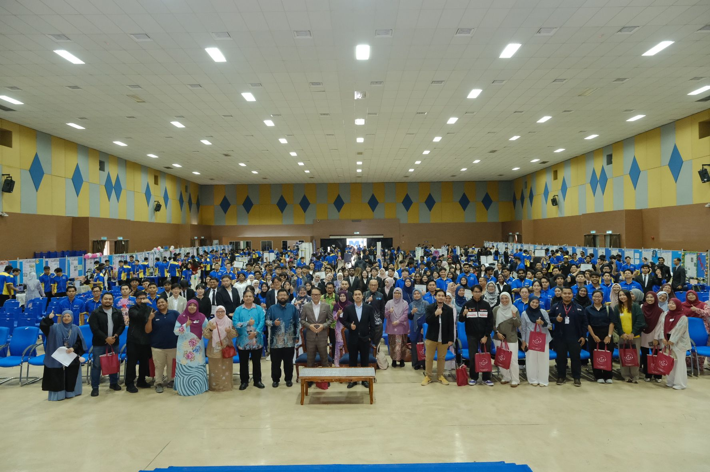


Kumpulan pemenang kategori Eng Tech Awards, Sennano Award dan anugerah lain IDSSC 2026, dinilai sepenuhnya melalui eScoring.
Terima kasih
Pentaksiran berterusan yang adil, berasaskan bukti dan dinilai oleh pelbagai penilai, untuk setiap pelajar Projek Rekabentuk, tanpa kos lesen.